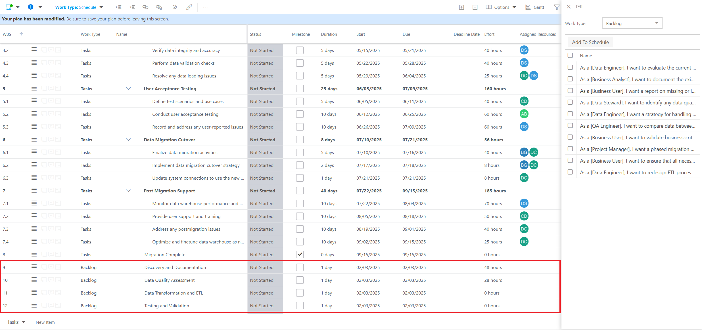
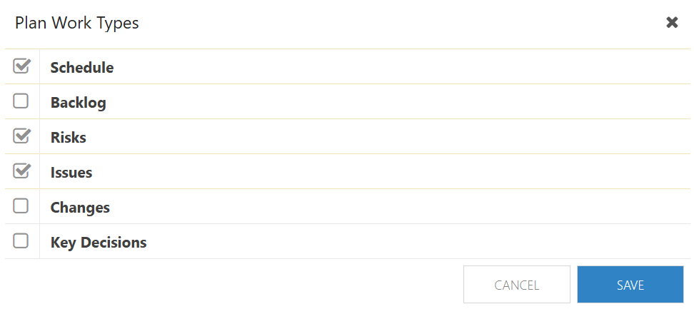

Work Types
A work type is a category of the way work is done, such as with different scheduling methods, processes, etc.. Work Types help in organizing and categorizing work in a project, making it easier to manage and track. Out of the box, OnePlan comes with Tasks, Issues, Risks, Backlogs, Changes, Lessons Learned, and Key Decisions. But, Work Types are configurable to align with your business needs, which is done by the Admin.
This article explains what Work Types are and how to use them.
Your OnePlan group may have different work types configured per your business process. You may not have any extra work types configured.
Video Length - 00:36
What are Work Types?
A work type is a category of the way work is done, such as with different scheduling methods, processes, etc.. Work Types help in organizing and categorizing work in a project, making it easier to manage and track. Out of the box, OnePlan comes with Tasks, Issues, Risks, Backlogs, Changes, Lessons Learned, and Key Decisions. But, Work Types are configurable to align with your business needs, which is done by the Admin.
Note
When the Backlog List App is added to your OnePlan group, a new work type called Backlog gets created. The fields and views are also added.
Switch Between Work Type Logs
Work Types are found in the Work Planner, which is found within a plan. So, Work Types allow you to further organize and categorize the work in your plan to best align with your processes. Each configured Work Type in OnePlan has its own Work Plan log within the Work Plan module. For example, your organization may have a Risk Work Type with a corresponding Risk log within the Work Planner.
Regardless of if you are viewing the Work Plan List or Board, you can use the Work Type menu to switch between the Work Types.

Create a New Work Item in a Work Type Log
Creating new Work Type items is exactly the same as creating a new Task in the main Schedule of the Work Plan. You can either use the Quick Entry field at the bottom of the screen, or the Add Item button in the Work Plan toolbar.

Assign Resources to Different Work Type Items
With all OnePlan Work Types, you can assign work items to resources in your project team. The work items will be added to the resource’s My Work list and Timesheet, to ensure that someone is working on the item, and nothing gets left behind.
Save Views per Work Type Log
There is a default view per Work Type. You may save views as needed per Work Type. To save a view for a Work Type log:
-
Navigate to the desired Work Type log. In this example, I will use the Issue log.

-
Update the view as desired by adding, removing, or rearranging columns, adding filters, adding groupings, etc..
-
Once you are happy with the view configuration, click into the View menu, and select Save View .

You can also pull work items from the work type logs into the schedule so you can see how the item affects the plan schedule. To pull a work item from a Work Type log into the main Schedule:
-
Go to the Schedule view.
-
Click the carrot next to the Add Item button, and select Insert Item from the drop-down. A form will open on the right side of the screen.
-
Select the Work Type that you want to insert into the main schedule.
-
Select the Work Items that you would like to insert into the schedule.
-
Click Add to Schedule . The selected items will be added to the bottom of the main schedule.
After clicking Add To Schedule , you wiill notice two things:.
-
You will be prompted to save your Work Plan.
-
There is a new icon next to the work item. If you hover over the icon, a tooltip will show stating that the "Item Is Scheduled."
-
This article explains how to select Work Types for your Plan and hide those that are not needed.
Plan owners have the ability to choose which Work Types are accessible within their plans. The selection of Work Types is configured on a Plan-by-Plan basis, allowing for easy customization to meet the specific needs of you and your project team.
Note
This functionality will be available as part of the April 25, 2025 release.
-
Click the Work Types menu, and select Select Work Types from the drop-down. The Plan Work Types form will open.
-
Check the Work Types that will be available in this plan. Uncheck the Work Types that will be hidden this plan.
 -
Click Save . The options available in the Work Type menu will update based on your selections.